— интегральная,
— интегральная, Пример реализации ПИД-регулятора в Unity3D
(Дополнить формулами)
Вместо введения
Системы автоматического управления (САУ) предназначены для автоматического изменения одного или нескольких параметров объекта управления с целью установления требуемого режима его работы. САУ обеспечивает поддержание постоянства заданных значений регулируемых параметров или их изменение по заданному закону либо оптимизирует определенные критерии качества управления. Например, к таким системам относятся:
Это достаточно широкий класс систем, которые можно найти где угодно. Но какое это отношение имеет к Unity3D и вероятно к играм в частности? В принципе прямое: в любой игре так или иначе использующей симуляцию как элемент геймплея реализуются САУ, к таким играм относятся, например, Kerbal Space Programm, Digital Combat Simulator (бывший Lock On), Strike Suit Zero и т.д. (кто знает еще примеры — пишите в комментариях). В принципе любая игра, моделирующая реальные физические процессы, в том числе и просто кинематику с динамикой движения, может реализовывать те или иные САУ — этот подход проще, естественнее, а у разработчика уже есть есть набор готовых инструментов, предоставленных всякими Вышнеградскими, Ляпуновыми, Калманами, Чебышевами и прочими Коломогоровами, поэтому можно обойтись без изобретения велосипеда, т.к. его уже изобрели, да так, что получилась отдельная наука: Теория автоматического управления. Главное тут не переусердствовать. Одна тут только проблема: рассказывают про ТАУ не везде, не всем, зачастую мало и не очень понятно.
Немножко теории
Классическая система автоматического управления представленная на следующем рисунке:
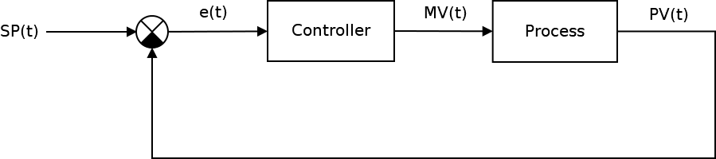
Ключевым элементом любой САУ является регулятор представляющий из себя устройство, которое следит за состоянием объекта управления и обеспечивает требуемый закон управления. Процесс управления включает в себя: вычисление ошибки управления или сигнала рассогласования e(t) как разницы между желаемой уставкой (set point или SP) и текущей величиной процесса (process vale или PV), после чего регулятор вырабатывает управляющие сигналы (manipulated value или MV).
Одной из разновидностью регуляторов является пропорционально-интегрально-дифференцирующий (ПИД) регулятор, который формирует управляющий сигнал, являющийся суммой трёх слагаемых: пропорционального, интегрального и дифференциального.
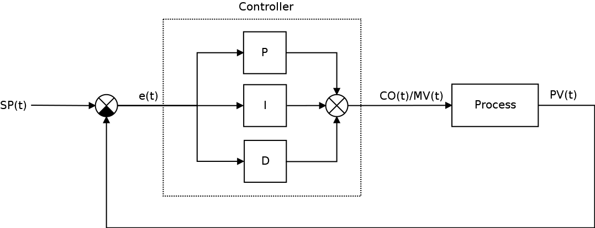
Где:
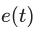 - ошибка рассогласования, а также,
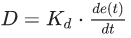 — дифференциальная составляющие (термы) закона управления, который в итоговом виде описывается следующими формулами
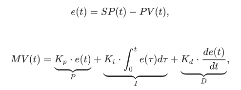
Пропорциональная составляющая P — отвечает за т.н. пропорциональное управление, смысл которого в том, что выходной сигнал регулятора, противодействует отклонению регулируемой величины (ошибки рассогласования или еще это называют невязкой) от заданного значения. Чем больше ошибка рассогласования, тем больше командное отклонение регулятора. Это самый простой и очевидный закон управления. Недостаток пропорционального закона управления заключается в том, что регулятор никогда не стабилизируется в заданном значении, а увеличение коэффициента пропорциональности всегда приводит к автоколебаниям. Именно поэтому в довесок к пропорциональному закону управления приходиться использовать интегральный и дифференциальный.
Интегральная составляющая I накапливает (интегрирует) ошибку регулирования, что позволяет ПИД-регулятору устранять статическую ошибку (установившуюся ошибку, остаточное рассогласование). Или другими словами: интегральное звено всегда вносит некоторое смещение и если система подвержена некоторыми постоянным ошибкам, то оно их компенсирует (за счет своего смещения). А вот если же этих ошибок нет или они пренебрежительно малы, то эффект будет обратным — интегральная составляющая сама будет вносить ошибку смещения. Именно по этой причине её не используют, например, в задачах сверхточного позиционирования. Ключевым недостатком интегрального закона управления является эффект насыщения интегратора (Integrator windup).
Дифференциальная составляющая D пропорциональна темпу изменения отклонения регулируемой величины и предназначена для противодействия отклонениям от целевого значения, которые прогнозируются в будущем. Примечательно то, что дифференциальная компонента устраняет затухающие колебания. Дифференциальное регулирование особенно эффективно для процессов, которые имеют большие запаздывания. Недостатком дифференциального закона управления является его неустойчивость к воздействую шумов (Differentiation noise).
Таким образом, в зависимости от ситуации могут применятся П-, ПД-, ПИ- и ПИД-регуляторы, но основным законом управления в основном является пропорциональный (хотя в некоторых специфических задачах и могут использоваться исключительно только звенья дифференциаторов и интеграторов).
Казалось бы, вопрос реализации ПИД-регуляторов уже давно избит и здесь на Хабре есть парочка неплохих статей на эту тему в том числе и на Unity3D, также есть неплохая статья PID Without a PhD (перевод) и цикл статей в журнале "Современные технологии автоматизации" в двух частях: первая и вторая. Также к вашим услугам статья на Википедии (наиболее полную читайте в английском варианте). А на форумах коммьюнити Unity3D нет-нет, да и всплывет PID controller как и на gamedev.stackexchange
При вопрос по реализации ПИД-регуляторов несколько глубже чем и кажется. Настолько, что юных самоделкиных, решивших, реализовать такую схему регулирования ждет немало открытий чудных, а тема актуальная. Так что надеюсь сей опус, кому-нибудь да пригодиться, поэтому приступим.
Попытка номер раз
В качестве примера попытаемся реализовать схему регулирования на примере управления поворотом в простенькой космической 2D-аркаде, по шагам, начиная с самого начала (не забыли, что это туториал?).
Почему не 3D? Потому что реализация не измениться, за исключением того, что придется воротить ПИД-регулятор для контроля тангажа, рысканья и крена. Хотя вопрос корректного применения ПИД-регулирования вместе с кватернионами действительно интересный, возможно в будущем его и освящу, но даже в NASA предпочитают углы Эйлера вместо кватернионов, так что обойдемся простенькой моделью на двухмерной плоскости.
Для начала создадим сам объект игровой объект космического корабля, который будет состоять из собственно самого объекта корабля на верхнем уровне иерархии, прикрепим к нему дочерний объект Engine (чисто спецэффектов ради). Вот как это выглядит у меня:
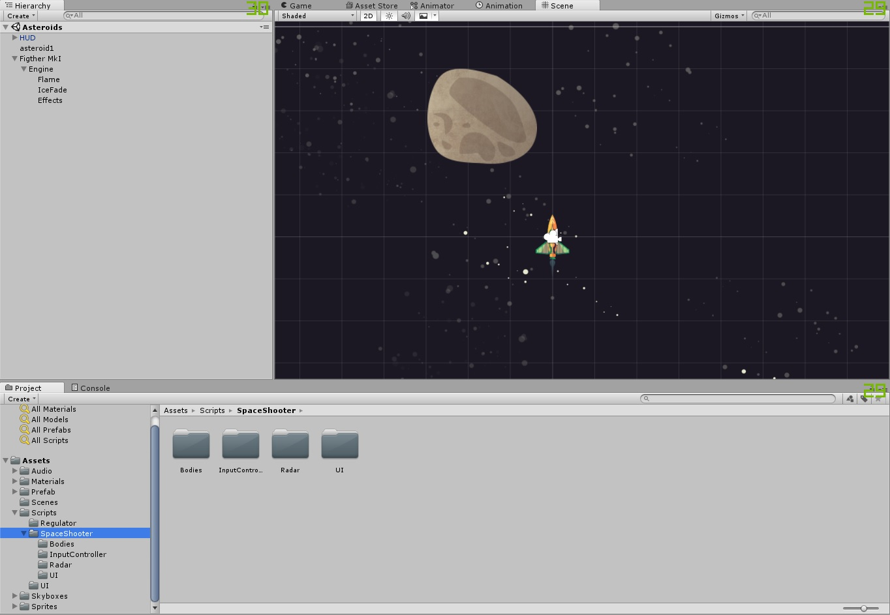
А на сам объект космического корабля накидаем в инспекторе всяческих компонент. Забегая вперед, приведу скрин того, как он будет выглядеть в конце:
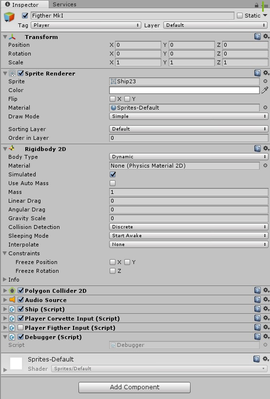
Но это потом, а пока в нем еще нет никаких скриптов, только стандартный джентльменский набор: Sprite Render, RigidBody2D, Polygon Collider, Audio Source (зачем?).
Собственно физика у нас сейчас самое главное и управление будет осуществляться исключительно через неё, в противном случае, применение ПИД-регулятора потеряло бы смысл. Масса нашего космического корабля оставим также в 1 кг, а все коэффициенты трения и гравитации равны нулю — в космосе же.
Т.к. помимо самого космического корабля есть куча других, менее умных космических объектов, то сначала опишем родительский класс BaseBody, который в себе будет содержать ссылки на на наши компоненты, методы инициализации и уничтожения, а также ряд дополнительных полей и методов, например для реализации небесной механики:
BaseBody.cs
using UnityEngine;
using System.Collections;
using System.Collections.Generic;
namespace Assets.Scripts.SpaceShooter.Bodies
{
[RequireComponent(typeof(SpriteRenderer))]
[RequireComponent(typeof(AudioSource))]
[RequireComponent(typeof(Rigidbody2D))]
[RequireComponent(typeof(Collider2D))]
public class BaseBody : MonoBehaviour
{
readonly float _deafultTimeDelay = 0.05f;
[HideInInspector]
public static List<BaseBody> _bodies = new List<BaseBody>();
#region RigidBody
[HideInInspector]
public Rigidbody2D _rb2d;
[HideInInspector]
public Collider2D[] _c2d;
#endregion
#region References
[HideInInspector]
public Transform _myTransform;
[HideInInspector]
public GameObject _myObject;
/// <summary>
/// Объект, который появляется при уничтожении
/// </summary>
public GameObject _explodePrefab;
#endregion
#region Audio
public AudioSource _audioSource;
/// <summary>
/// Звуки, которые проигрываются при получении повреждения
/// </summary>
public AudioClip[] _hitSounds;
/// <summary>
/// Звуки, которые проигрываются при появлении объекта
/// </summary>
public AudioClip[] _awakeSounds;
/// <summary>
/// Звуки, которые воспроизводятся перед смертью
/// </summary>
public AudioClip[] _deadSounds;
#endregion
#region External Force Variables
/// <summary>
/// Внешние силы воздйствующие на объект
/// </summary>
[HideInInspector]
public Vector2 _ExternalForces = new Vector2();
/// <summary>
/// Текущий вектор скорости
/// </summary>
[HideInInspector]
public Vector2 _V = new Vector2();
/// <summary>
/// Текущий вектор силы гравитации
/// </summary>
[HideInInspector]
public Vector2 _G = new Vector2();
#endregion
public virtual void Awake()
{
Init();
}
public virtual void Start()
{
}
public virtual void Init()
{
_myTransform = this.transform;
_myObject = gameObject;
_rb2d = GetComponent<Rigidbody2D>();
_c2d = GetComponentsInChildren<Collider2D>();
_audioSource = GetComponent<AudioSource>();
PlayRandomSound(_awakeSounds);
BaseBody bb = GetComponent<BaseBody>();
_bodies.Add(bb);
}
/// <summary>
/// Уничтожение персонажа
/// </summary>
public virtual void Destroy()
{
_bodies.Remove(this);
for (int i = 0; i < _c2d.Length; i++)
{
_c2d[i].enabled = false;
}
float _t = PlayRandomSound(_deadSounds);
StartCoroutine(WaitAndDestroy(_t));
}
/// <summary>
/// Ждем некоторое время перед уничтожением
/// </summary>
/// <param name="waitTime">Время ожидания</param>
/// <returns></returns>
public IEnumerator WaitAndDestroy(float waitTime)
{
yield return new WaitForSeconds(waitTime);
if (_explodePrefab)
{
Instantiate(_explodePrefab, transform.position, Quaternion.identity);
}
Destroy(gameObject, _deafultTimeDelay);
}
/// <summary>
/// Проигрывание случайного звука
/// </summary>
/// <param name="audioClip">Массив звуков</param>
/// <returns>Длительность проигрываемого звука</returns>
public float PlayRandomSound(AudioClip[] audioClip)
{
float _t = 0;
if (audioClip.Length > 0)
{
int _i = UnityEngine.Random.Range(0, audioClip.Length - 1);
AudioClip _audioClip = audioClip[_i];
_t = _audioClip.length;
_audioSource.PlayOneShot(_audioClip);
}
return _t;
}
/// <summary>
/// Получение урона
/// </summary>
/// <param name="damage">Уровень урона</param>
public virtual void Damage(float damage)
{
PlayRandomSound(_hitSounds);
}
}
}
Вроде описали все что надо, даже больше чем нужно (в рамках этой статьи). Теперь отнаследуем от него класс корабля Ship, который должен уметь двигаться и поворачивать:
SpaceShip.cs
using UnityEngine;
using System.Collections;
using System.Collections.Generic;
namespace Assets.Scripts.SpaceShooter.Bodies
{
public class Ship : BaseBody
{
public Vector2 _movement = new Vector2();
public Vector2 _target = new Vector2();
public float _rotation = 0f;
public void FixedUpdate()
{
float torque = ControlRotate(_rotation);
Vector2 force = ControlForce(_movement);
_rb2d.AddTorque(torque);
_rb2d.AddRelativeForce(force);
}
public float ControlRotate(Vector2 rotate)
{
float result = 0f;
return result;
}
public Vector2 ControlForce(Vector2 movement)
{
Vector2 result = new Vector2();
return result;
}
}
}
Пока в нем нет ничего интересно, на текущий момент это просто класс-заглушка.
Также опишем базовый(абстрактный) класс для всех контроллеров ввода BaseInputController:
BaseInputController.cs
using UnityEngine;
using Assets.Scripts.SpaceShooter.Bodies;
namespace Assets.Scripts.SpaceShooter.InputController
{
public enum eSpriteRotation
{
Rigth = 0,
Up = -90,
Left = -180,
Down = -270
}
public abstract class BaseInputController : MonoBehaviour
{
public GameObject _agentObject;
public Ship _agentBody; // Ссылка на компонент логики корабля
public eSpriteRotation _spriteOrientation = eSpriteRotation.Up; //Это связано с нестандартной
// ориентации спрайта "вверх" вместо "вправо"
public abstract void ControlRotate(float dt);
public abstract void ControlForce(float dt);
public virtual void Start()
{
_agentObject = gameObject;
_agentBody = gameObject.GetComponent<Ship>();
}
public virtual void FixedUpdate()
{
float dt = Time.fixedDeltaTime;
ControlRotate(dt);
ControlForce(dt);
}
public virtual void Update()
{
//TO DO
}
}
}
И наконец, класс контроллера игрока PlayerFigtherInput:
PlayerInput.cs
using UnityEngine;
using Assets.Scripts.SpaceShooter.Bodies;
namespace Assets.Scripts.SpaceShooter.InputController
{
public class PlayerFigtherInput : BaseInputController
{
public override void ControlRotate(float dt)
{
// Определяем позицию мыши относительно игрока
Vector3 worldPos = Input.mousePosition;
worldPos = Camera.main.ScreenToWorldPoint(worldPos);
// Сохраняем координаты указателя мыши
float dx = -this.transform.position.x + worldPos.x;
float dy = -this.transform.position.y + worldPos.y;
//Передаем направление
Vector2 target = new Vector2(dx, dy);
_agentBody._target = target;
//Вычисляем поворот в соответствии с нажатием клавиш
float targetAngle = Mathf.Atan2(dy, dx) * Mathf.Rad2Deg;
_agentBody._targetAngle = targetAngle + (float)_spriteOrientation;
}
public override void ControlForce(float dt)
{
//Передаем movement
_agentBody._movement = Input.GetAxis("Vertical") * Vector2.up
+ Input.GetAxis("Horizontal") * Vector2.right;
}
}
}
Вроде бы закончили, теперь наконец можно перейти к тому, ради чего все это затевалось, т.е. ПИД-регуляторам (не забыли надеюсь?). Его реализация кажется простой до безобразия:
using System;
using System.Collections.Generic;
using System.Linq;
using System.Text;
namespace Assets.Scripts.Regulator
{
[System.Serializable] // Этот атрибут необходим для того что бы поля регулятора
// отображались в инспекторе и сериализовывались
public class SimplePID
{
public float Kp, Ki, Kd;
private float lastError;
private float P, I, D;
public SimplePID()
{
Kp = 1f;
Ki = 0;
Kd = 0.2f;
}
public SimplePID(float pFactor, float iFactor, float dFactor)
{
this.Kp = pFactor;
this.Ki = iFactor;
this.Kd = dFactor;
}
public float Update(float error, float dt)
{
P = error;
I += error * dt;
D = (error - lastError) / dt;
lastError = error;
float CO = P * Kp + I * Ki + D * Kd;
return CO;
}
}
}
Значения коэффициентов по умолчанию возьмем с потолка: это будет тривиальный единичный коэффициент пропорционального закона управления Kp = 1, небольшое значение коэффициента для дифференциального закона управления Kd = 0.2, который должен устранить ожидаемые колебания и нулевое значение для Ki, которое выбрано потому, что в нашей программной модели нет никаких статичных ошибок (но вы всегда можете их внести, а потом героически побороться с помощью интегратора).
Теперь вернемся к нашему классу SpaceShip и попробуем заюзать наше творение в качестве регулятора поворота космического корабля в методе ControlRotate:
public float ControlRotate(Vector2 rotate)
{
float MV = 0f;
float dt = Time.fixedDeltaTime;
//Вычисляем ошибку
float angleError = Mathf.DeltaAngle(_myTransform.eulerAngles.z, targetAngle);
//Получаем корректирующее ускорение
MV = _angleController.Update(angleError, dt);
return MV;
}
ПИД-регулятор будет осуществлять точное угловое позиционировая космического корабля только за счет крутящего момента. Все честно, физика и САУ, почти как в реальной жизни.
И без этих ваших Quaternion.Lerp:
if (!_rb2d.freezeRotation)
rb2d.freezeRotation = true;
float deltaAngle = Mathf.DeltaAngle(_myTransform.eulerAngles.z, targetAngle);
float T = dt * Mathf.Abs( _rotationSpeed / deltaAngle);
// Трансформируем угол в вектор
Quaternion rot = Quaternion.Lerp(
_myTransform.rotation,
Quaternion.Euler(new Vector3(0, 0, targetAngle)),
T);
// Изменяем поворот объекта
_myTransform.rotation = rot;
Получившейся исходный код Ship.cs:
using UnityEngine;
using Assets.Scripts.Regulator;
namespace Assets.Scripts.SpaceShooter.Bodies
{
public class Ship : BaseBody
{
public GameObject _flame;
public Vector2 _movement = new Vector2();
public Vector2 _target = new Vector2();
public float _targetAngle = 0f;
public float _angle = 0f;
[Header("PID")]
public SimplePID _angleController = new SimplePID();
public void FixedUpdate()
{
float torque = ControlRotate(_targetAngle);
Vector2 force = ControlForce(_movement);
_rb2d.AddTorque(torque);
_rb2d.AddRelativeForce(force);
}
public float ControlRotate(float rotate)
{
float MV = 0f;
float dt = Time.fixedDeltaTime;
_angle = _myTransform.eulerAngles.z;
//Вычисляем ошибку
float angleError = Mathf.DeltaAngle(_angle, rotate);
//Получаем корректирующее ускорение
MV = _angleController.Update(angleError, dt);
return MV;
}
public Vector2 ControlForce(Vector2 movement)
{
Vector2 MV = new Vector2();
//Кусок кода спецэффекта работающего двигателя ради
if (movement != Vector2.zero)
{
if (_flame != null)
{
_flame.SetActive(true);
}
}
else
{
if (_flame != null)
{
_flame.SetActive(false);
}
}
MV = movement;
return MV;
}
}
}
Все? Расходимся по домам?
https://www.youtube.com/watch?v=2rC6prAN1IE
WTF! Что происходит? Почему корабль поворачивается как-то странно? И почему он так резко отскакивает от других объектов? Неужели этот глупый ПИД-регулятор не работает?
Без паники! Давайте попробуем разобраться что происходит.
В момент получения нового значения SP, происходит резкий (ступенчатый) скачок рассогласования ошибки, которая, как мы помним, вычисляется вот так:
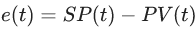
соответственно происходит резкий скачок производной ошибки
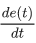
которую мы вычисляем в этой строчке кода:
D = (error - lastError) / dt;
Можно, конечно, попробовать другие схемы дифференцирования, например, трехточечную, или пятиточечную, или… но все равно это не поможет. Ну вот не любят производные резких скачков — в таких точках функция не является дифференцируемой. Однако поэкспериментировать с разными схемами дифференцирования и интегрирования стоит, но потом и не в этой статье.
Думаю что настал момент построить графики переходного процесса: ступенчатое воздействие от S(t) = 0 в SP(t) = 90 градусов для тела массой в 1 кг, длинной плеча силы в 1 метр и шагом сетки дифференцирования 0.02 с — прям как в нашем примере на Unity3D (на самом деле не совсем, при построении этих графиков не учитывалось, что момент инерции зависит от геометрии твердого тела, поэтому переходный процесс будет немножко другой, но все же достаточно похожий для демонстрации). Все величены на грифике приведены в абсолютных значениях:
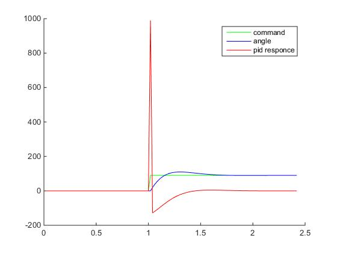
Хм, что здесь происходит? Куда улетел отклик ПИД-регулятора?
Поздравляю, мы только что столкнулись с таким явлением как "удар" (kick). Очевидно, что в момент времени, когда процесс еще PV = 0, а уставка уже SP = 90, то при численном дифференцировании получим значение производной порядка 4500, которое умножится на Kd=0.2 и сложится с пропорциональным теромом, так что на выходе мы получим значение углового ускорения 990, а это уже форменное надругательство над физической моделью Unity3D (угловые скорости будут достигать 18000 град/с… я думаю это предельное значение угловой скорости для RigidBody2D).
Впрочем можете поэкспериментировать.
Попытка номер два. Сатурация
Логично, что привод (в нашем случае виртуальные маневровые двигатели SpaceShip), не может отрабатывать сколько угодно большие значения которые может выдать наш безумный регулятор. Так что первое что мы сделаем — сатурируем выход регулятора:
public float ControlRotate(Vector2 rotate, float thrust)
{
float CO = 0f;
float MV = 0f;
float dt = Time.fixedDeltaTime;
//Вычисляем ошибку
float angleError = Mathf.DeltaAngle(_myTransform.eulerAngles.z, targetAngle);
//Получаем корректирующее ускорение
CO = _angleController.Update(angleError, dt);
//Сатурируем
MV = CO;
if (MV > thrust) MV = thrust;
if (MV< -thrust) MV = -thrust;
return MV;
}
А очередной раз переписанный класс Ship полностью выглядит так:
namespace Assets.Scripts.SpaceShooter.Bodies
{
public class Ship : BaseBody
{
public GameObject _flame;
public Vector2 _movement = new Vector2();
public Vector2 _target = new Vector2();
public float _targetAngle = 0f;
public float _angle = 0f;
public float _thrust = 1f;
[Header("PID")]
public SimplePID _angleController = new SimplePID(0.1f,0f,0.05f);
public void FixedUpdate()
{
_torque = ControlRotate(_targetAngle, _thrust);
_force = ControlForce(_movement);
_rb2d.AddTorque(_torque);
_rb2d.AddRelativeForce(_force);
}
public float ControlRotate(float targetAngle, float thrust)
{
float CO = 0f;
float MV = 0f;
float dt = Time.fixedDeltaTime;
//Вычисляем ошибку
float angleError = Mathf.DeltaAngle(_myTransform.eulerAngles.z, targetAngle);
//Получаем корректирующее ускорение
CO = _angleController.Update(angleError, dt);
//Сатурируем
MV = CO;
if (MV > thrust) MV = thrust;
if (MV< -thrust) MV = -thrust;
return MV;
}
public Vector2 ControlForce(Vector2 movement)
{
Vector2 MV = new Vector2();
if (movement != Vector2.zero)
{
if (_flame != null)
{
_flame.SetActive(true);
}
}
else
{
if (_flame != null)
{
_flame.SetActive(false);
}
}
MV = movement * _thrust;
return MV;
}
public void Update()
{
}
}
}
Итоговая схема нашего САУ тогда станет уже вот такой
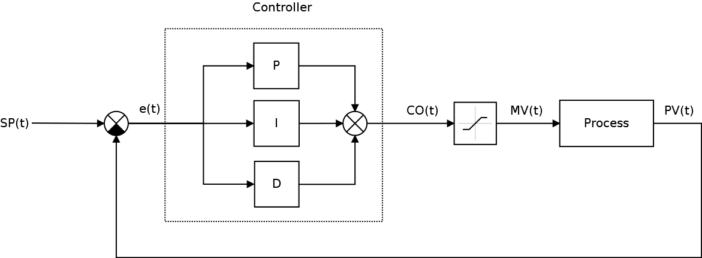
При этом уже становится понятно, что выход контроллера CO(t) немного не одно и тоже, что управляемая величина процесса MV(t).
Собственно с этого места можно уже добавлять новую игровую сущность — привод, через которую и будет осуществляться управление процессом, логика работы которой может быть более сложной, чем просто Mathf.Clamp(), например, можно ввести дискретизацию значений (дабы не перегружать игровую физику величинами идущими шестыми после запятой), мертвую зону (опять таки не имеет смысл перегружать физику сверхмалыми реакциями), ввести задержку в упраление и нелинейность (например, сигмоиду) привода, после чего посмотреть, что из этого получится.
Запустив игру, мы обнаружим, что космический корабль стал наконец управляемым:
https://www.youtube.com/watch?v=b1o92dL3Gls
Если построить графики, то можно увидеть, что реакция контроллера стала уже вот такой:
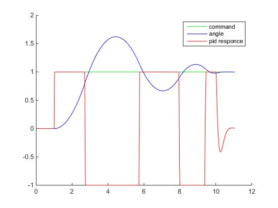
Здесь уже используются нормированные величены, углы поделены на значение SP, а выход контроллера отнормирован относительно максимального значения на котором уже происходит сатурация.
Теперь на графике видно наличие ошибки перерегулирования (overshooting) и затухающие колебания. Уменьшая Kp и увеличивая Kd можно добиться уменьшения колебаний, но зато увеличится время реакции контроллера (скорость поворота корабля). И наоборот, увеличивая Kp и уменьшая Kd — можно добиться увеличения скорости реакции контроллера, но появятся паразитные колебания, которые при определенных (критических) значениях, перестанут быть затухающими.
Ниже приведена известна таблица влияния увеличения параметров ПИД-регулятора (как уменьшить шрифт, а то таблица безе переносов не лезет?):
|
Терм |
Время нарастания |
Ошибка перерегулирования |
Время переходного процесса |
Установившаяся ошибка |
Стабильность |
|
Kp |
Уменьшение |
Увеличение |
Небольшие изменения |
Уменьшается |
Деградирует |
|
Ki |
Уменьшается |
Увеличивается |
Увеличивается |
Компенсируется если есть |
Деградирует |
|
Kd |
Небольшие изменения |
Уменьшается |
Уменьшается |
Повышается если Kd небольшая |
А общий алгоритм ручной настройки ПИД-регулятора следующий:
Каких-то общих значений параметров ПИД-регулятора нет: конкретные значения зависят исключительно от параметров процесса (его передаточной характеристики): ПИД-регулятор отлично работающий с одним объектом управления окажется неработоспособным с другим. Более того, коэффициенты при пропорциональной, интегральной и дифференциальной составляющих еще и взаимозависимы.
В общем не будем о грустном, дальше нас ждет самое интересное...
Попытка номер три. Еще раз производные
Приделав костыль в виде ограничения значений выхода контроллера мы так и не решили самую главную проблему нашего регулятора — дифференциальная составляющая плохо себя чувствует при ступенчатом изменении ошибки на входе регуляторе. На самом деле есть множество других костылей, например, в момент скачкообразного изменения SP "отключать" дифференциальную составляющую или же поставить фильтры нижних частот между SP(t) и операцией
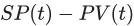
за счет которого будет происходить плавное нарастание ошибки, а можно совсем развернуться и впендюрить самый настоящий фильтр Калмана для сглаживания входных данных. В общем костылей много, и добавить наблюдателя конечно хотелось бы, но не в этот раз.
Поэтому снова вернемся к производной ошибки рассогласования и внимательно на неё посмотрим:
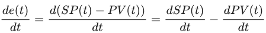
Ничего не заметили? Если хорошенько присмотреться, то можно обнаружить, что вообще-то SP(t), не меняется во времени (за исключением моментов ступенчатого изменения, когда регулятор получает новую команду), т.е. её производная равна нулю:
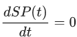
тогда
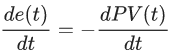
Иными словами, вместо производной ошибки, которая дифференцируема не везде мы можем использовать производную от процесса, который в мире классической механики как правило непрерывен и дифференцируем везде, а схема нашей САУ уже приобретет следующий вид:
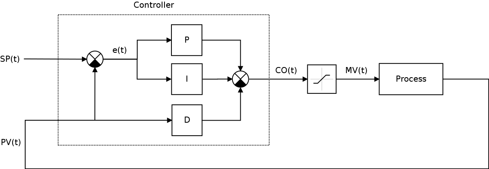
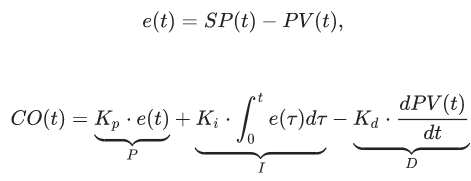
Модифицируем код регулятора:
using System;
using System.Collections.Generic;
using System.Linq;
using System.Text;
namespace Assets.Scripts.Regulator
{
[System.Serializable]
public class SimplePID
{
public float Kp, Ki, Kd;
private float P, I, D;
private float lastPV = 0f;
public SimplePID()
{
Kp = 1f;
Ki = 0f;
Kd = 0.2f;
}
public SimplePID(float pFactor, float iFactor, float dFactor)
{
this.Kp = pFactor;
this.Ki = iFactor;
this.Kd = dFactor;
}
public float Update(float error, float PV, float dt)
{
P = error;
I += error * dt;
D = -(PV - lastPV) / dt;
lastPV = PV;
float CO = Kp * P + Ki * I + Kd * D;
return CO;
}
}
}
И немного изменим метод ControlRotate:
public float ControlRotate(Vector2 rotate, float thrust)
{
float CO = 0f;
float MV = 0f;
float dt = Time.fixedDeltaTime;
//Вычисляем ошибку
float angleError = Mathf.DeltaAngle(_myTransform.eulerAngles.z, targetAngle);
//Получаем корректирующее ускорение
CO = _angleController.Update(angleError, _myTransform.eulerAngles.z, dt);
//Сатурируем
MV = CO;
if (CO > thrust) MV = thrust;
if (CO < -thrust) MV = -thrust;
return MV;
}
И-и-и-и… если запустить игру, то обнаружиться, что на самом деле ничего ничего не изменилось с последней попытки, что и требовалось доказать. Однако, если убрать сатурацию, то график реакции регулятора будет выглядеть вот так:
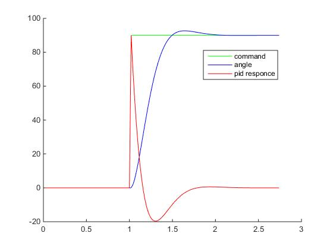
Скачок CO(t) по прежнему присутствует, однако он уже не такой большой как был в самом начале, а самое главное — он стал предсказуемым, т.к. обеспечивается исключительно пропорциональной составляющей, и ограничен максимально возможной ошибкой рассогласования и пропорциональным коэффициентом ПИД-регулятора (а это уже намекает на то, что Kp имеет смысл выбрать все же меньше единицы, например, 1/90f), но не зависит от шага сетки дифференцирования (т.е. dt). В общем, я настоятельно рекомендую использовать именно производную процесса, а не ошибки.
Думаю теперь никого не удивит, но таким же макаром можно заменить на
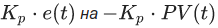
однако останавливаться на этом мы не будем, можете сами поэкспериментировать и рассказать в комментариях, что из этого получилось (самому интересно)
Попытка номер четыре. Альтернативные реализации ПИД-регулятора
Помимо описанного выше идеального представления ПИД-регулятора, на практике часто применяется стандартная форма, без коэффициентов Ki и Kd, вместо которых используются временные постоянные.
Такой подход связан с тем, что ряд методик настройки ПИД-регулятора основан на частотных характеристиках ПИД-регулятора и процесса. Собственно вся ТАУ и крутится вокруг частотных характеристик процессов, поэтому для желающих углубиться, и, внезапно, столкнувшихся с альтернативной номенклатурой, приведу пример т.н. стандартной формы ПИД-регулятора:
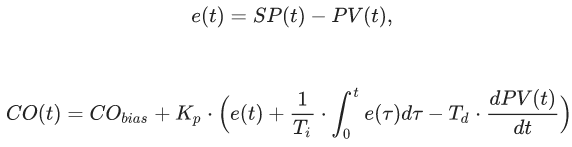
где,
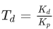 — постоянная дифференцирования, влияющая на прогнозирование состояния системы регулятором,
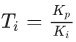 — постоянная интегрирования, влияющая на интервал усреднения ошибки интегральным звеном.
Основные принципы настройки ПИД-регулятора в стандартной форме аналогичны идеализированному ПИД-регулятору:
Исходный код стандартной формы:
namespace Assets.Scripts.Regulator
{
[System.Serializable]
public class StandartPID
{
public float Kp, Ti, Td;
public float error, CO;
public float P, I, D;
private float lastPV = 0f;
public StandartPID()
{
Kp = 0.1f;
Ti = 10000f;
Td = 0.5f;
bias = 0f;
}
public StandartPID(float Kp, float Ti, float Td)
{
this.Kp = Kp;
this.Ti = Ti;
this.Td = Td;
}
public float Update(float error, float PV, float dt)
{
this.error = error;
P = error;
I += (1 / Ti) * error * dt;
D = -Td * (PV - lastPV) / dt;
CO = Kp * (P + I + D);
lastPV = PV;
return CO;
}
}
}
Помимо такой формы ПИД-регулятора, часто используется т.н. реккурентная форма:
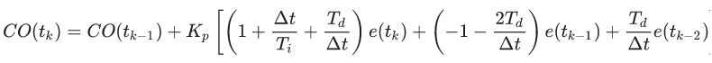
Не будем на ней останавливаться, т.к. она актуальна прежде всего для хардверных программистов, работающих с FPGA и микроконтроллерами, где такая реализация значительно удобнее и эффективнее. В нашем же случае — давайте что-нибудь сваям на Unity3D — это просто еще одна реализация ПИД-контроллера, которая ни чем не лучше других и даже менее понятная, так что еще раз дружно порадуемся как хорошо программировать в уютненьком C#, а не в жутком и страшном VHDL, например.
Вместо заключения. Куда бы еще присобачить ПИД-регулятор
Теперь попробуем немного усложнить управление корабля используя двухконтурное управление: один ПИД-регулятор, уже знакомый нам _angleController, отвечает по прежнему за угловое позиционирование, а вот второй — новый, _angularVelocityController — контролирует скорость поворота:
public float ControlRotate(float targetAngle, float thrust)
{
float CO = 0f;
float MV = 0f;
float dt = Time.fixedDeltaTime;
_angle = _myTransform.eulerAngles.z;
//Контроллер угла поворота
float angleError = Mathf.DeltaAngle(_angle, targetAngle);
float torqueCorrectionForAngle =
_angleController.Update(angleError, _angle, dt);
//Контроллер стабилизации скорости
float angularVelocityError = -_rb2d.angularVelocity;
float torqueCorrectionForAngularVelocity =
_angularVelocityController.Update(angularVelocityError, -angularVelocityError, dt);
//Суммарный выход контроллера
CO = torqueCorrectionForAngle + torqueCorrectionForAngularVelocity;
//Дискретизируем с шагом 100
CO = Mathf.Round(100f * CO) / 100f;
//Сатурируем
MV = CO;
if (CO > thrust) MV = thrust;
if (CO < -thrust) MV = -thrust;
return MV;
}
Назначение второго регулятора — гашение избыточных угловых скоростей, за счет изменения крутящего момента — это сродни наличию углового трения, которое мы отключили еще при создании игрового объекта. Такая схема управления [возможно] позволит получить более стабильное поведение корабля, и даже обойтись только пропорциональными коэффициентами управления — второй регулятор будет гасить все колебания, выполняя функцию, аналогичную дифференциальной составляющей первого регулятора.
Помимо этого, добавим новый класс ввода игрока — PlayerInputCorvette, в котором повороты буду осуществляться уже за счет нажатия клавиш "вправо-влево", а целеуказание с помощью мыши мы оставим для чего-нибудь более полезного, например, для управления турелью. Заодно у нас теперь появился такой параметр как _turnRate — отвечающий за скорость/отзывчивость поворота (не понятно только куда его поместить лучше в InputCOntroller или все же Ship).
public class PlayerCorvetteInput : BaseInputController
{
public float _turnSpeed = 90f;
public override void ControlRotate()
{
// Находим указатель мыши
Vector3 worldPos = Input.mousePosition;
worldPos = Camera.main.ScreenToWorldPoint(worldPos);
// Сохраняем относительные координаты указателя мыши
float dx = -this.transform.position.x + worldPos.x;
float dy = -this.transform.position.y + worldPos.y;
//Передаем направление указателя мыши
Vector2 target = new Vector2(dx, dy);
_agentBody._target = target;
//Вычисляем поворот в соответствии с нажатием клавиш
_agentBody._rotation -= Input.GetAxis("Horizontal") * _turnSpeed * Time.deltaTime;
}
public override void ControlForce()
{
//Передаем movement
_agentBody._movement = Input.GetAxis("Vertical") * Vector2.up;
}
}
Также для наглядности накидаем на коленках скрипт для отображения отладочной информации:
namespace Assets.Scripts.SpaceShooter.UI
{
[RequireComponent(typeof(Ship))]
[RequireComponent(typeof(BaseInputController))]
public class Debugger : MonoBehaviour
{
Ship _ship;
BaseInputController _controller;
List<SimplePID> _pids = new List<SimplePID>();
List<string> _names = new List<string>();
Vector2 _orientation = new Vector2();
// Use this for initialization
void Start()
{
_ship = GetComponent<Ship>();
_controller = GetComponent<BaseInputController>();
_pids.Add(_ship._angleController);
_names.Add("Angle controller");
_pids.Add(_ship._angularVelocityController);
_names.Add("Angular velocity controller");
}
// Update is called once per frame
void Update()
{
DrawDebug();
}
Vector3 GetDiretion(eSpriteRotation spriteRotation)
{
switch (_controller._spriteOrientation)
{
case eSpriteRotation.Rigth:
return transform.right;
case eSpriteRotation.Up:
return transform.up;
case eSpriteRotation.Left:
return -transform.right;
case eSpriteRotation.Down:
return -transform.up;
}
return Vector3.zero;
}
void DrawDebug()
{
//Направление поворота
Vector3 vectorToTarget = transform.position
+ 5f * new Vector3(-Mathf.Sin(_ship._targetAngle * Mathf.Deg2Rad),
Mathf.Cos(_ship._targetAngle * Mathf.Deg2Rad), 0f);
// Текущее направление
Vector3 heading = transform.position + 4f * GetDiretion(_controller._spriteOrientation);
//Угловое ускорение
Vector3 torque = heading - transform.right * _ship._Torque;
Debug.DrawLine(transform.position, vectorToTarget, Color.white);
Debug.DrawLine(transform.position, heading, Color.green);
Debug.DrawLine(heading, torque, Color.red);
}
void OnGUI()
{
float x0 = 10;
float y0 = 100;
float dx = 200;
float dy = 40;
float SliderKpMax = 1;
float SliderKpMin = 0;
float SliderKiMax = .5f;
float SliderKiMin = -.5f;
float SliderKdMax = .5f;
float SliderKdMin = 0;
int i = 0;
foreach (SimplePID pid in _pids)
{
y0 += 2 * dy;
GUI.Box(new Rect(25 + x0, 5 + y0, dx, dy), "");
pid.Kp = GUI.HorizontalSlider(new Rect(25 + x0, 5 + y0, 200, 10),
pid.Kp,
SliderKpMin,
SliderKpMax);
pid.Ki = GUI.HorizontalSlider(new Rect(25 + x0, 20 + y0, 200, 10),
pid.Ki,
SliderKiMin,
SliderKiMax);
pid.Kd = GUI.HorizontalSlider(new Rect(25 + x0, 35 + y0, 200, 10),
pid.Kd,
SliderKdMin,
SliderKdMax);
GUIStyle style1 = new GUIStyle();
style1.alignment = TextAnchor.MiddleRight;
style1.fontStyle = FontStyle.Bold;
style1.normal.textColor = Color.yellow;
style1.fontSize = 9;
GUI.Label(new Rect(0 + x0, 5 + y0, 20, 10), "Kp", style1);
GUI.Label(new Rect(0 + x0, 20 + y0, 20, 10), "Ki", style1);
GUI.Label(new Rect(0 + x0, 35 + y0, 20, 10), "Kd", style1);
GUIStyle style2 = new GUIStyle();
style2.alignment = TextAnchor.MiddleLeft;
style2.fontStyle = FontStyle.Bold;
style2.normal.textColor = Color.yellow;
style2.fontSize = 9;
GUI.TextField(new Rect(235 + x0, 5 + y0, 60, 10), pid.Kp.ToString(), style2);
GUI.TextField(new Rect(235 + x0, 20 + y0, 60, 10), pid.Ki.ToString(), style2);
GUI.TextField(new Rect(235 + x0, 35 + y0, 60, 10), pid.Kd.ToString(), style2);
GUI.Label(new Rect(0 + x0, -8 + y0, 200, 10), _names[i++], style2);
}
}
}
}
Класс Ship также претерпел необратимые мутации и теперь должен выглядеть вот так:
А вот, собственно заключительное видео того, что должно получиться:
К сожалению получилось охватить не все, что хотелось бы, в частности почти не затронут вопрос настройки ПИД-регулятора и практически не освящена интегральная составляющая — фактически приведен пример только для ПД-регулятора. Собственно изначально планировалось несколько больше примеров (круиз-контроль, вращение турели и компенсация вращательного момента), но статья итак уже разбухла, да и вообще.
Ссылки на материалы на русском языке